L01B 绳路素材 v7
过去：空绕绳钩
新增 · sprite
PROP_RopeCleat_Empty_1994.png过去：绳尾收住参考
新增 · contact_reference
PROP_RopeCleat_Secured_1994.png现在：断裂锈坏绕绳钩
新增 · sprite
PROP_RopeCleat_Broken_2024.png过去：树后绳结
新增 · sprite
PROP_Knot_Tied_1994.png过去：解开的松绳
新增 · result_sprite
PROP_Knot_Released_1994.png可拖动的绳尾与结头
新增 · sprite
PROP_RopeEnd_Grab.png连续绳索绘制纹理
新增 · rope_texture
TEX_Rope_Hemp_Strip.png现在：承绳粗枝凹口
新增 · sprite
PROP_BranchFork_Bare_2024.png绳索搭过枝杈的接触参考
新增 · contact_reference
REF_BranchFork_Routed_2024.png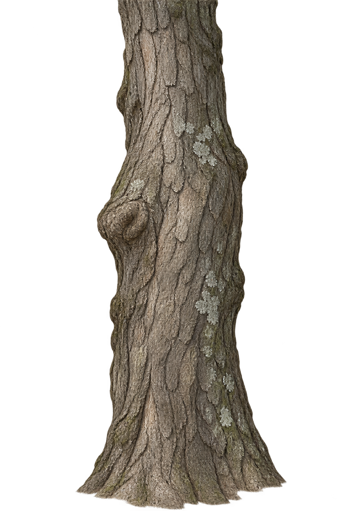
现在：遮住旧绳结的树干前景层
新增 · occluder
PROP_TrunkFront_Occluder_2024.png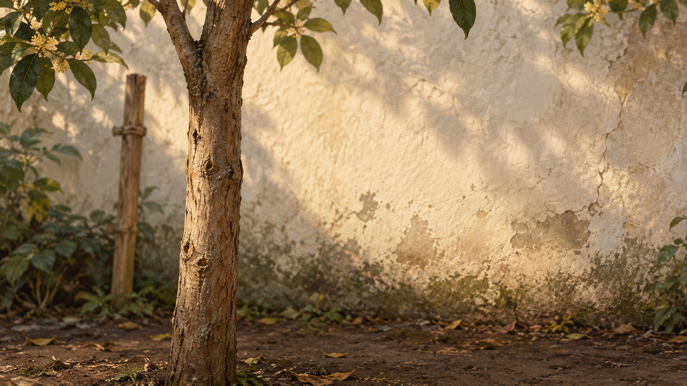
过去：解绳结近景底图
新增 · background
ILL_KnotCloseup_BG_1994.png
过去完整架面
复用 · existing_asset
Reused/PROP_RackLeaf_1994.png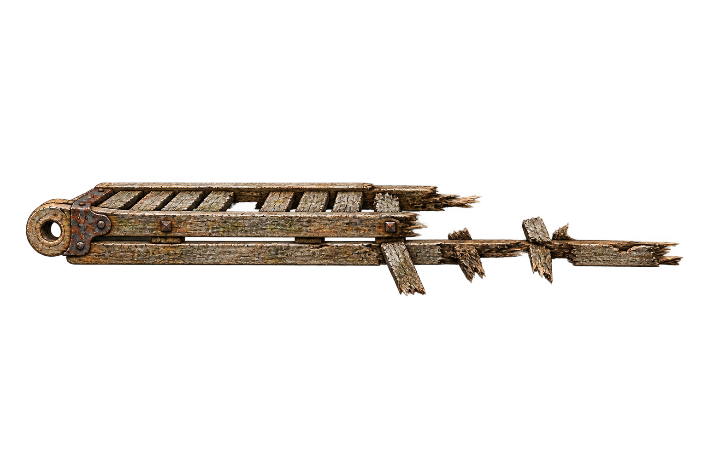
现在损坏架面
复用 · existing_asset
Reused/PROP_RackLeaf_2024.png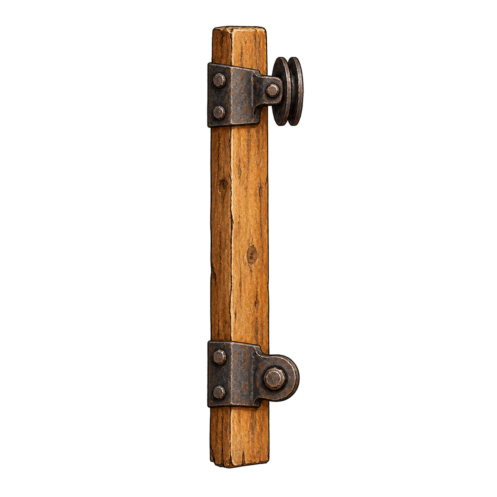
过去固定座与铰链
复用 · existing_asset
Reused/PROP_RackMount_1994.png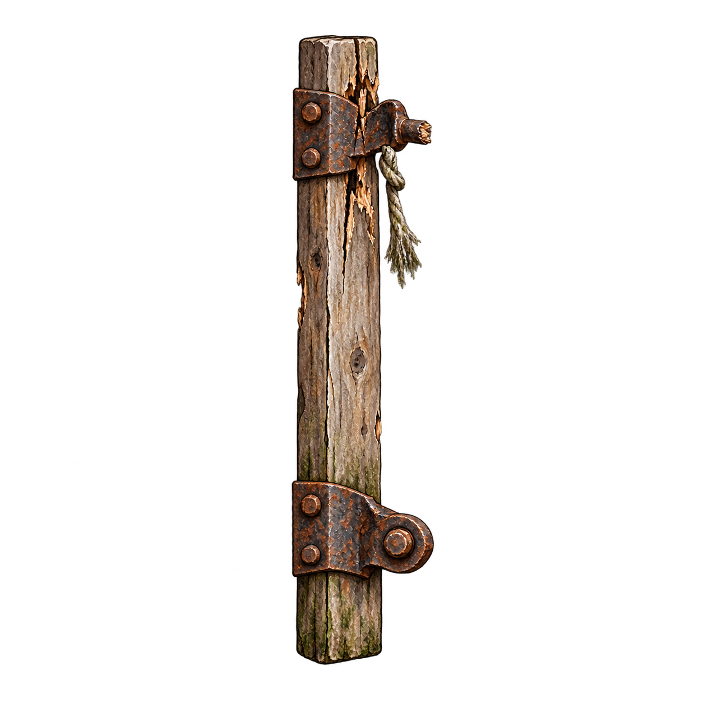
现在损坏固定座
复用 · existing_asset
Reused/PROP_RackMount_2024.png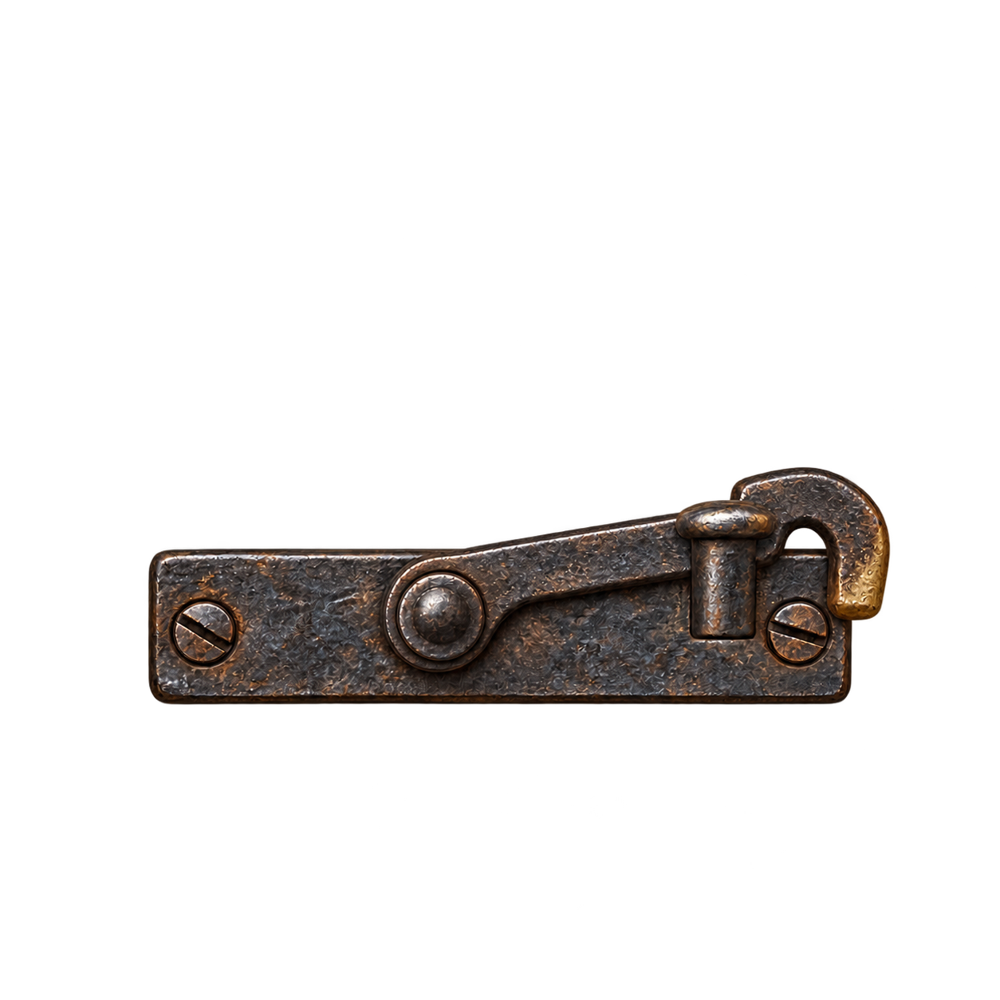
小型金属止挡备选件，安装方向待灰盒确定
复用 · existing_asset
Reused/PROP_HingeStop_Reference.png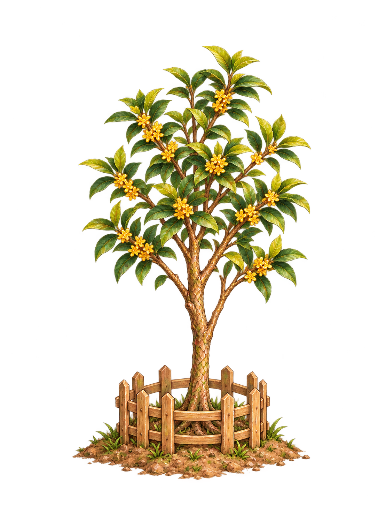
过去的小桂花树
复用 · existing_asset
Reused/PROP_TreeYoung_1994.png
现在的成年桂花树
复用 · existing_asset
Reused/PROP_TreeMature_2024.png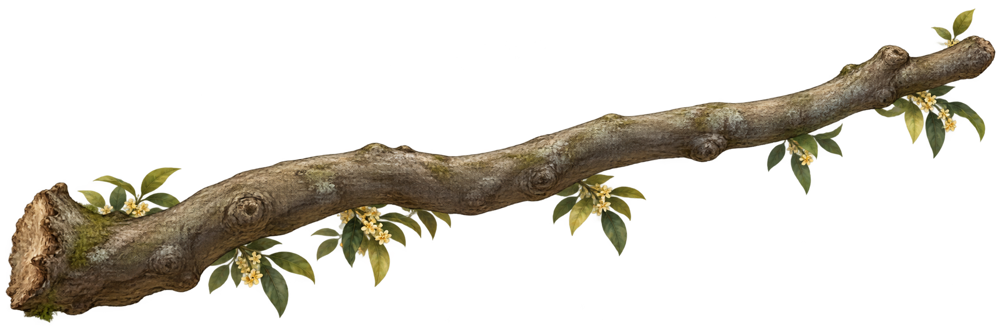
连接枝条备选，启用范围由灰盒确定
复用 · existing_asset
Reused/PROP_BranchTransition.png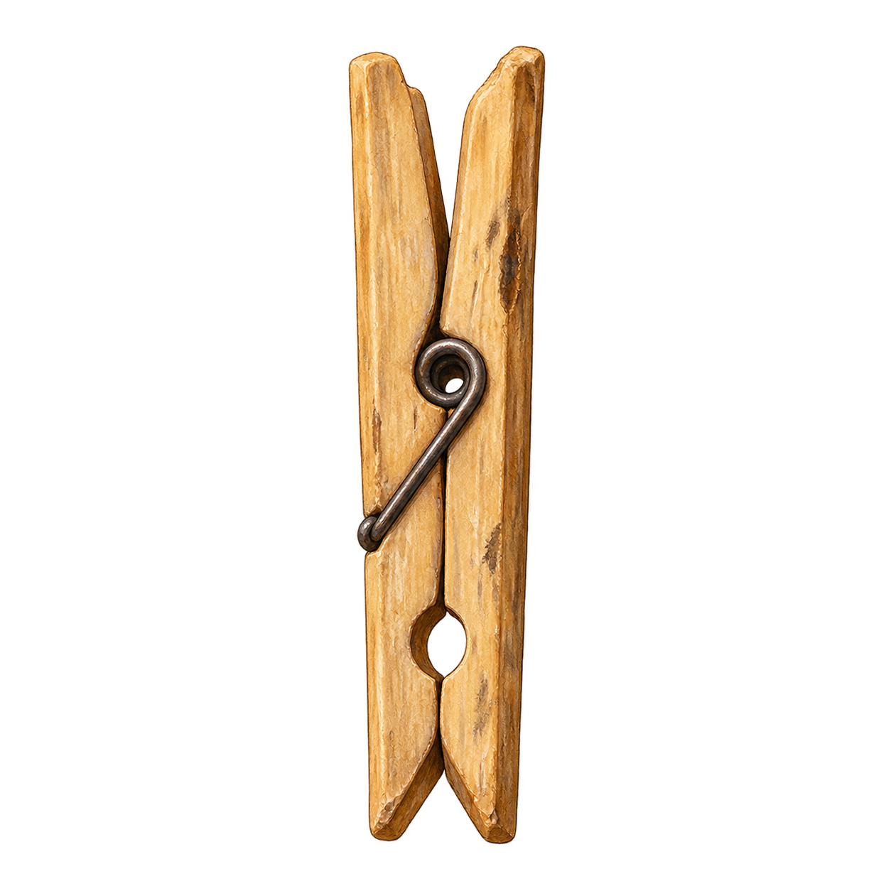
夹子剧情道具
复用 · existing_asset
Reused/PROP_ClothesPeg.png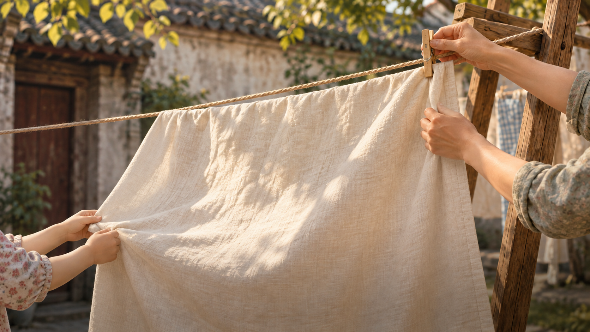
祖孙晾布剧情插画
复用 · existing_asset
Reused/ILL_ClothMemory.png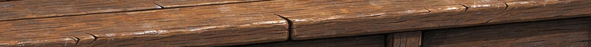
固定平台等现有木件材质
复用 · existing_asset
Reused/Strip_Wood.png